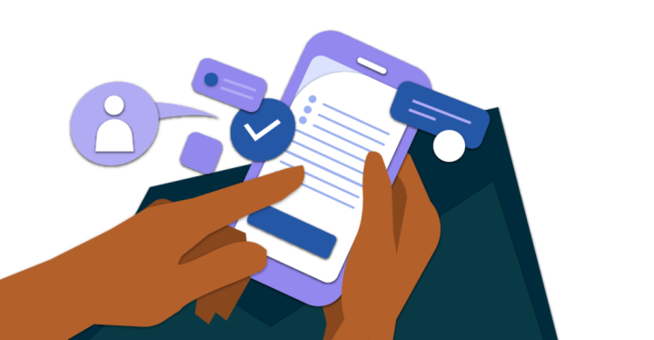

Set 2 project Ideas
(Set 1 project Ideas)
Ideas for To Do List

Main Goal: Allow user to add, rename, and delete tasks, and set and
achieve goals
- Basic to-do list
-
Allows the user to set how often they want to do a task as a goal, (and
give the option to set a time/times to do that goal)
- As they do a task every day consecutively, they build a streak
-
Sends a notification reminding them to do that task at the chosen time
(e.g exercise every day at 8:00am)
Extension:
The same concept can be used to send reminders e.g someone sets a task to
take out the trash at 8:00 a.m, then at 8 the app sends a notification as
a reminder to take it out
Ideas for Message App

Main Goal: Send a message to a recipient at a certain time
-
Would be able to collect and store data about a contact's birthday,
anniversary, etc and send a message when that time arrives
-
Allows the user to choose whether to repeat sending the message forever
or send it just once
-
The message could be a default message like “Happy birthday!” or a
custom message (If longer than a certain length, would warn the user but
let them keep going)
-
Would be able to remind the sender a day or up to a week in advance
about the “special” day
- Allows the user to pick the exact time the message would be sent
Extension: The same concept can be used to send reminders, e.g remind
someone every day at a certain time to take their medication
Ideas for Coding productivity app
Main Goal: It locks your phone until you have spent a certain
amount of time in a code editor.
Other ideas: There could be an “emergency” option or something